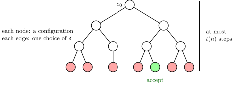
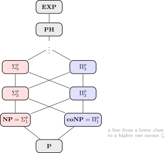

31 Non-determinism and \mathbf{PH}
% noend hides “end for”; drop it to keep them
A deterministic TM has exactly one possible move in each configuration. A nondeterministic Turing machine (NTM) can have several. Its transition function has the form \delta\colon Q \times \Gamma \to \mathcal{P}(Q \times \Gamma \times \{L, R\}), so in each configuration the machine may choose among finitely many moves. On an input w, the possible computations of an NTM form a computation tree. The root is the start configuration, the children of a configuration are the configurations reachable from it in one step, and every path from the root is one possible computation (Figure 31.1). The NTM accepts w if at least one path reaches the accepting state.

We can think of an NTM as a machine that guesses well: if some sequence of choices leads to acceptance, the machine finds it. This is not a realistic model of computation, but it captures exactly the problems whose solutions are easy to check.
Definition 31.1 (Running time of an NTM) An NTM N decides a language L in time t\colon \mathbb{N} \to \mathbb{N} if, for every input w:
- every computation of N on w halts within t(|w|) steps, so the computation tree has depth at most t(|w|); and
- w \in L if and only if at least one computation of N on w accepts.
We write \mathbf{NTIME}(t(n)) for the class of languages decided by some NTM in time \mathcal{O}(t(n)).
We have two equivalent ways of looking at \mathbf{NP}.
Definition 31.2 (\mathbf{NP} via nondeterministic Turing machines) \mathbf{NP}= \bigcup_{k \geqslant 1} \mathbf{NTIME}(n^k). That is, \mathbf{NP} is the class of languages decided by an NTM in polynomial time.
Compare this with \mathbf{P}= \bigcup_{k} \mathbf{TIME}(n^k) and \mathbf{EXP}= \bigcup_{k} \mathbf{TIME}(2^{n^k}).
The second definition avoids nondeterminism. It only asks that membership be easy to check, given the right extra information.
Definition 31.3 (\mathbf{NP} via verifiers) A verifier for a language L \subseteq \Sigma^* is a deterministic TM V that runs in polynomial time and takes inputs of the form \langle w, c \rangle, together with a polynomial p, such that for every w \in \Sigma^*, w \in L \iff \text{there is a } c \text{ with } |c| \leqslant p(|w|) \text{ such that } V \text{ accepts } \langle w, c \rangle. Such a word c is a certificate (or witness) for w. A language is in \mathbf{NP} if it has a verifier.
The definition is asymmetric. If w \in L, some short certificate convinces V. If w \notin L, no certificate does, so V cannot be fooled.
Example 31.1
- \mathtt{SAT}\in \mathbf{NP}. A certificate for \langle F \rangle is a satisfying assignment, and V checks every clause. Equivalently, an NTM guesses a value for each variable and then checks the clauses.
- \mathtt{CLIQUE}\in \mathbf{NP}. A certificate for \langle G, k \rangle is a set of k vertices, and V checks that they are pairwise adjacent.
- \mathtt{COMPOSITE} = \{\langle n \rangle : n > 1 \text{ is not prime}\} \in \mathbf{NP}. A certificate is a factor d with 1 < d < n, and V checks that d divides n. The certificate has length at most |\langle n \rangle|, and division takes polynomial time in the number of digits.
Theorem 31.1 The two definitions of \mathbf{NP} are equivalent: a language is decided by an NTM in polynomial time if and only if it has a verifier.
Theorem 31.2 \mathbf{P}\subseteq \mathbf{NP}\subseteq \mathbf{EXP}
We do not know whether either inclusion is strict. The question \mathbf{P}\stackrel{?}{=} \mathbf{NP} is the subject of the next chapter. We saw, however, that \mathbf{P}\neq \mathbf{EXP} (by the time hierarchy theorem), so at least one of the two inclusions in the previous theorem is strict.
\mathbf{P} is closed under complement: swap the accepting and rejecting states of the decider. For \mathbf{NP}, swapping does not work. The complement would have to reject when some computation accepts, that is, accept only when all computations reject. For example, a short certificate that F is satisfiable is easy to give, but there is no obvious short certificate that F is unsatisfiable. The class of complements of languages in \mathbf{NP} is called \mathbf{co}\mathbf{NP}, and whether \mathbf{NP}= \mathbf{co}\mathbf{NP} is another open problem.
Exercise 31.1 Show that \mathbf{P}\subseteq \mathbf{co}\mathbf{NP}\subseteq \mathbf{EXP}.
31.1 The polynomial hierarchy
This section is a draft and will be updated before the class relative to it.
The polynomial hierarchy is the polynomial-time version of the arithmetic hierarchy we met in computability. Recall that a language L is in \mathbf{RE} if and only if there is a decidable relation R such that w \in L \iff \exists c\ \big[\, R(w, c) \,\big]. Here c can be taken to be an accepting computation of a TM on w, and R checks that it is one. In the same way, L \in \mathbf{co}\mathbf{RE} if and only if w \in L \iff \forall c\ [\, R(w,c) \,]. Allowing more alternating quantifiers gives the arithmetic hierarchy, with levels \Sigma_n^0 and \Pi_n^0. So \Sigma_1^0 = \mathbf{RE}, \Pi_1^0 = \mathbf{co}\mathbf{RE}, and a language is in \Sigma_2^0 if it can be written as \exists c_1\, \forall c_2\, [\, R(w, c_1, c_2) \,], and so on.
\mathbf{NP} is defined in exactly the same way, with two changes: the relation must be checkable in polynomial time, and the certificates must be short. By definition, L is in \mathbf{NP} if there are a polynomial-time verifier V and a polynomial p such that w \in L \iff \exists c\ \big[\, |c| \leqslant p(|w|) \text{ and } V \text{ accepts } \langle w, c \rangle \,\big]. So \mathbf{NP} consists of the languages defined by a single existential quantifier over short certificates, followed by a polynomial-time check. It is the polynomial-time analogue of \mathbf{RE}. Likewise, \mathbf{co}\mathbf{NP} is the analogue of \mathbf{co}\mathbf{RE}: it consists of the languages defined by a single universal quantifier, w \in L \iff \forall c\ \big[\, |c| \leqslant p(|w|) \Rightarrow V \text{ accepts } \langle w, c \rangle \,\big]. For example, F is unsatisfiable if and only if every assignment falsifies it. The polynomial hierarchy is what we get, as in the arithmetic hierarchy, by allowing several quantifiers alternating between \exists and \forall. This is why its levels are written \Sigma_k^p and \Pi_k^p. The superscript p stands for “polynomial”, just as the superscript 0 in \Sigma_n^0 indicates that the quantifiers range over finite objects such as words or numbers.
| Computability | Complexity | |
|---|---|---|
| The check | decidable | polynomial time |
| Certificates | any length | length \leqslant p(|w|) |
| One \exists | \Sigma_1^0 = \mathbf{RE} | \Sigma_1^p = \mathbf{NP} |
| One \forall | \Pi_1^0 = \mathbf{co}\mathbf{RE} | \Pi_1^p = \mathbf{co}\mathbf{NP} |
| No quantifier | \mathbf{R} (*) | \mathbf{P} |
| All levels | arithmetic hierarchy | \mathbf{PH} |
(*) In the arithmetic hierarchy, the decidable languages form the level \Delta_1^0 = \Sigma_1^0 \cap \Pi_1^0, because the “no quantifier” level contains only the decidable relations.
The analogy has limits, and they show what makes complexity theory harder. In computability, \mathbf{R}= \mathbf{RE}\cap \mathbf{co}\mathbf{RE}, and every level of the arithmetic hierarchy is known to be strictly contained in the next. In complexity, it is open whether \mathbf{P}= \mathbf{NP}\cap \mathbf{co}\mathbf{NP}, and it is believed to be false: factoring is a candidate counterexample. It is not even known whether \Sigma_1^p \neq \Sigma_2^p, since that would imply \mathbf{P}\neq \mathbf{NP}.
Many natural questions need more than one quantifier. Take the question “is there a formula with at most k symbols that is equivalent to F?” Equivalence is itself a \forall statement, so this question has the form \exists F' \ \forall \alpha \ \big[\, F' \text{ is a formula with }|F'| \leqslant k \text{ and $\alpha$ is an assignment s.t. } F'(\alpha) = F(\alpha) \,\big]. It is not clear how to express it with a single quantifier.
To keep the notation short, we write \exists^p c for “there is a c with |c| \leqslant p(|w|)”, and \forall^p c for “for every c with |c| \leqslant p(|w|)”.
Definition 31.4 (The polynomial hierarchy) Let k \geqslant 1. A language L is in \Sigma_k^p if there are a polynomial-time TM V and a polynomial p such that, for every w, w \in L \iff \exists^p c_1\ \forall^p c_2\ \exists^p c_3 \cdots Q_k c_k\ \ V \text{ accepts } \langle w, c_1, \dots, c_k \rangle, where the quantifiers alternate and Q_k is \exists if k is odd and \forall if k is even. A language is in \Pi_k^p if the same holds with the quantifiers starting with \forall: w \in L \iff \forall^p c_1\ \exists^p c_2\ \forall^p c_3 \cdots Q_k c_k\ \ V \text{ accepts } \langle w, c_1, \dots, c_k \rangle. We set \Sigma_0^p = \Pi_0^p = \mathbf{P}, and define the polynomial hierarchy as \mathbf{PH}= \bigcup_{k \geqslant 0} \Sigma_k^p.
In particular, \Sigma_1^p = \mathbf{NP} and \Pi_1^p = \mathbf{co}\mathbf{NP}. Negating a formula with alternating quantifiers swaps \exists and \forall, and the negation of “V accepts” is “V rejects”, which can also be checked in polynomial time. So \Pi_k^p = \mathbf{co}\Sigma_k^p = \{\, \overline{L} : L \in \Sigma_k^p \,\}.
Theorem 31.3 For every k \geqslant 0:
- \Sigma_k^p \cup \Pi_k^p \subseteq \Sigma_{k+1}^p \cap \Pi_{k+1}^p.
- \mathbf{PH}\subseteq \mathbf{EXP}.
The known inclusions are summarized in Figure 31.2. As with \mathbf{P}\stackrel{?}{=} \mathbf{NP}, we do not know whether any of them is strict.

It is widely believed that the hierarchy is infinite, that is, \Sigma_k^p \subsetneq \Sigma_{k+1}^p for every k. If one level is closed under complement, then the hierarchy stops growing at that level. We prove the case k = 0.
Theorem 31.4 If \mathbf{P}= \mathbf{NP}, then \mathbf{PH}= \mathbf{P}.
The same argument, merging two adjacent quantifiers of the same kind into one, gives the general statement.
Exercise 31.2 If \Sigma_k^p = \Pi_k^p for some k \geqslant 1, then \mathbf{PH}= \Sigma_k^p. In particular, if \mathbf{NP}= \mathbf{co}\mathbf{NP}, then \mathbf{PH}= \mathbf{NP}.
These results are often used as evidence. A statement that would make \mathbf{PH} collapse is considered very unlikely, almost as unlikely as \mathbf{P}= \mathbf{NP}. For example, if graph isomorphism were \mathbf{NP}-complete, then \mathbf{PH} would collapse to \Sigma_2^p. This is the main reason it is believed not to be \mathbf{NP}-complete.